Installing DNS Service
Translations:
This topic describes how to install the DNS service for use with WebSitePanel.
Installing the DNS Service on Windows Server 2003
In the Windows Control Panel, open Add/Remove Windows Components. Select Networking Services and then click Details.
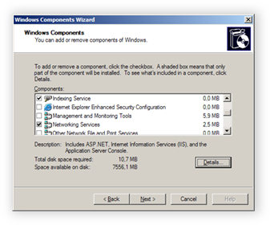
Select Domain Name System (DNS) and then click OK.
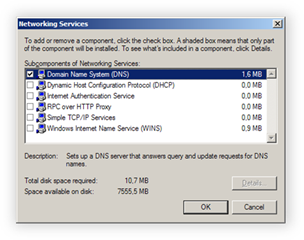
Click Next to finish the DNS service installation.
Installing the DNS Service on Windows Server 2008
Open Server Manager, select Roles in the left tree view, and then click Add Roles.
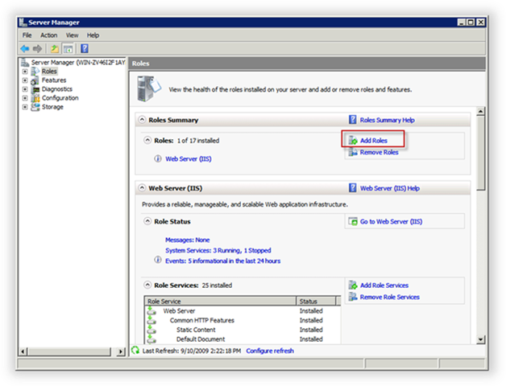
Select the DNS Server role and then click Next.
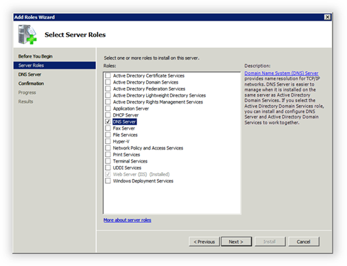
Follow the wizard steps and when you are finished, click Install to install the selected roles.
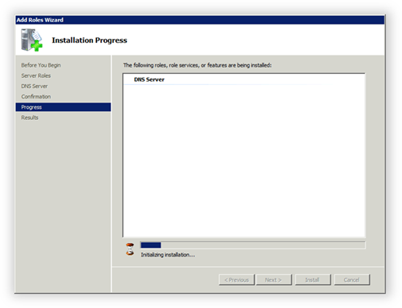
Configuring the DNS Service
Before you start the configuration of the DNS Server, make sure that your domain name is registered. The following examples show the domain name Contoso.com; replace this name with your own domain name.
Open the DNS manager (Start > Administrative Tools > DNS).
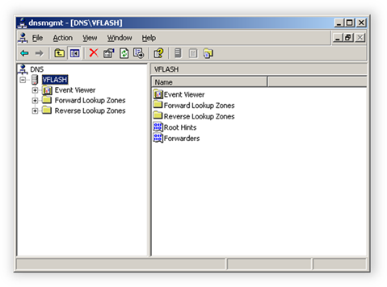
Right-click the node for your computer and then click Properties. Click the Interfaces tab, select Only the following IP addresses, and specify at least two IP addresses from your server's IP addresses pool.
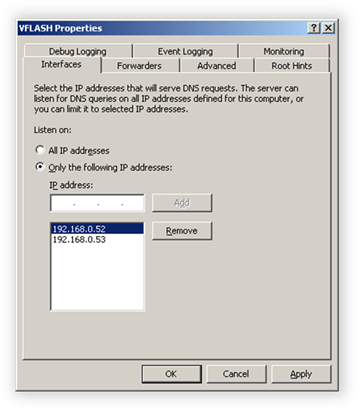
Click the Advanced tab and then select the check boxes shown in the following illustration:
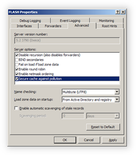
Click OK to update the DNS service settings.
Configuring Custom Name Servers
In order to get your personal Name Server records, you must create at least one DNS primary zone.
In the DNS manager, right-click the Forward Lookup Zones node and select New Zone. Use the wizard to create a new primary zone named "Contoso.com".
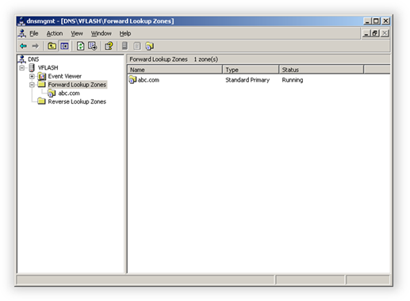
Create two NS1 and NS2 A records that point to two different IP addresses.
Right-click the Contoso.com node and then click Properties. Click the Name Servers tab and add references to the name servers ns1.contoso.com and ns2.contoso.com.
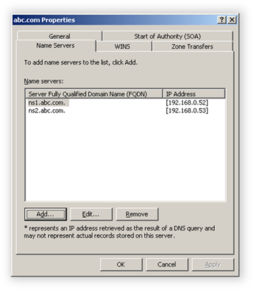
Click the Start of Authority (SOA) tab and change the SOA record settings as shown in the following illustration:
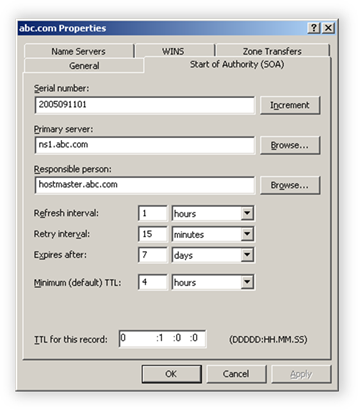
The serial number should be in the format of YYYYMMDDNN, where YYYY is the current year, MM is the current month, and DD is the current day. For NN, use a number that starts with 01 each new day and is be incremented by 1 each time you change DNS zones. The primary server is the name of the ns1 Name Server that you created in the previous step.
For Responsible person, specify the email address of the of the person who can be contacted in case of any questions regarding the current DNS zone.
Change the time settings as shown in the previous illustration.
Click OK to save your changes.
Add the following additional zone records:
- Four A records: "*", "ftp", "mail", "www", with the corresponding IP addresses.
- One MX record that points to "mail.contoso.com." with priority set to 10.
- One TXT record with the setting
v=spf1 a mx -all(referred to as the SPF record).
The completed zone will look like the following illustration:
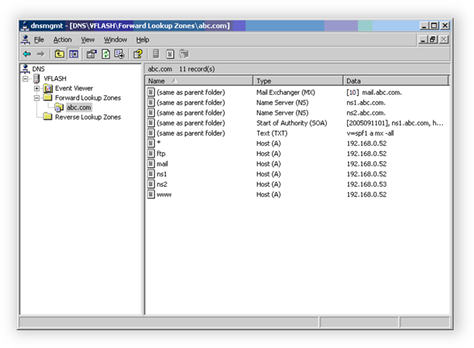